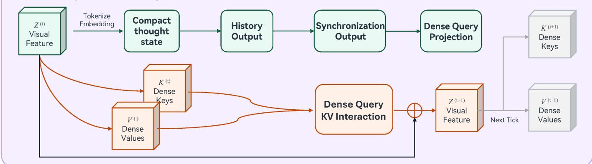

Paper analysis · Dense prediction × Continuous Thought
ThinkSR: 압축된 사고로
조밀한 복원을 조종하기
Dense-Query Continuous Thought Machine (DQ-CTM)
sparse-thought ↔ dense-output mismatch를 정의하고 해소한다
sparse-thought ↔ dense-output mismatch를 정의하고 해소한다
문제 정의
생각은 압축적인데, 출력은 조밀해야 한다
CTM의 thought representation은 compact하지만, SR의 출력은 모든 위치가 살아 있는
dense spatial field여야 한다. 전역 pooling은 인터페이스를 얻는 대신
위치별 정체성을 잃는다.

Figure 1 — 원래 CTM은 시각 정보를 하나의 compact token으로 압축한다.
window 단위 적용은 window 내부의 공간 정체성을 무너뜨린다.
DQ-CTM은 위치별 dense query token을 만든다.
1 · Persistent dense visual carrier
토큰을 줄이지 않는다
2 · Compact thought ↔ dense carrier
읽고, 갱신하되, 개수는 보존한다
전체 구조
encoder → window → 공유 DQ-CTM tick → decoder

Figure 2 — 갱신된 window token을 원래 공간 배열로 복원해 HR로 디코딩한다.
parameter는 thought tick 간 공유되고, 각 tick의 출력이 progressive trajectory를 이룬다.
정량 비교 · ×4 lightweight SR
CNN baseline과는 대등, 최신 모델에는 뒤처진다
| Method | Params | Set5 | Set14 | BSD100 | Urban100 | Manga109 | Average |
|---|---|---|---|---|---|---|---|
| CARN | 1.592M | 32.13/0.8937 | 28.60/0.7806 | 27.58/0.7349 | 26.07/0.7837 | 30.47/0.9084 | 28.970/0.8203 |
| IMDN | 0.715M | 32.21/0.8948 | 28.58/0.7811 | 27.56/0.7353 | 26.04/0.7838 | 30.45/0.9075 | 28.968/0.8205 |
| RFDN | 0.550M | 32.24/0.8952 | 28.61/0.7819 | 27.57/0.7360 | 26.11/0.7858 | 30.58/0.9089 | 29.022/0.8216 |
| SwinIR-light | 0.930M | 32.44/0.8976 | 28.77/0.7858 | 27.69/0.7406 | 26.47/0.7980 | 30.92/0.9151 | 29.258/0.8274 |
| SRFormer-light | 0.873M | 32.51/0.8988 | 28.82/0.7872 | 27.73/0.7422 | 26.67/0.8032 | 31.17/0.9165 | 29.380/0.8296 |
| MambaIRv2-light | 0.790M | 32.51/0.8992 | 28.84/0.7878 | 27.75/0.7426 | 26.82/0.8079 | 31.24/0.9182 | 29.432/0.8311 |
| CATANet | 0.535M | 32.58/0.8998 | 28.90/0.7880 | 27.75/0.7427 | 26.87/0.8081 | 31.31/0.9183 | 29.482/0.8314 |
| DQ-CTM-SR (V1, T=4) | 1.129M | 32.164/0.8954 | 28.622/0.7826 | 27.630/0.7377 | 26.103/0.7859 | 30.395/0.9085 | 28.983/0.8220 |
평균 기준 CARN·IMDN보다 근소하게 높고 RFDN과는 PSNR 0.039 dB 뒤진다.
CATANet과의 격차는 평균 PSNR 0.499 dB · SSIM 0.0094, Urban100에서 가장 크다.
비교군 수치는 원 논문 인용이고 DQ-CTM-SR만 직접 학습·평가한 값이라 통제 실험은 아니다.
Thought sweep · DIV2K validation 100장
tick을 더 돌수록 좋아지지만, 이득은 빠르게 줄어든다
PSNRY 28.91 → 30.47 dB
L1 0.0386 → 0.0229
tick당 이득은 0.97 → 0.30 → 0.20 → 0.09 dB로 줄어든다. 학습은 T=4까지만 했고, 그 너머는 검증되지 않았다.
L1 0.0386 → 0.0229
tick당 이득은 0.97 → 0.30 → 0.20 → 0.09 dB로 줄어든다. 학습은 T=4까지만 했고, 그 너머는 검증되지 않았다.
읽을 때 주의할 점
같은 실험의 숫자가 세 곳에서 다르다
abstract
PSNR-Y 28.1045 → 30.2817
PSNR-RGB 26.6271 → 28.7781
L1 0.034602 → 0.023545
PSNR-Y 28.1045 → 30.2817
PSNR-RGB 26.6271 → 28.7781
L1 0.034602 → 0.023545
thought-sweep 표
PSNR-Y 28.91 → 30.47
PSNR-RGB 25.45 → 28.98
L1 0.0386 → 0.0229
PSNR-Y 28.91 → 30.47
PSNR-RGB 25.45 → 28.98
L1 0.0386 → 0.0229
본문은 T=1→4 PSNR-Y 증가를 1.4611 dB로 서술하지만 표 기준으로는 0.59 dB다.
서로 다른 checkpoint나 평가 설정을 섞었을 가능성이 있고, source에는 설명이 없다.